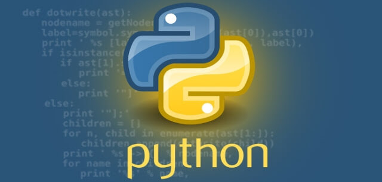

Interpreted Languages
Interpreted languages are executed line by line by an interpreter rather than being compiled into machine code. They are generally easier to debug and can be more flexible. These languages are commonly used in scripting and rapid application development. Python is a high-level language known for its readability and simplicity. Ruby is a dynamic, open-source language focused on simplicity and productivity. JavaScript is widely used in web development to create interactive web pages. PHP is a server-side scripting language used to develop dynamic web pages.
- Python:  High-level, general-purpose programming language
- Ruby: Dynamic, open source programming language
- JavaScript:
 Scripting language for web development
Scripting language for web development - PHP: